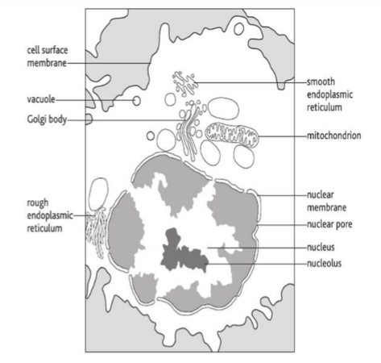
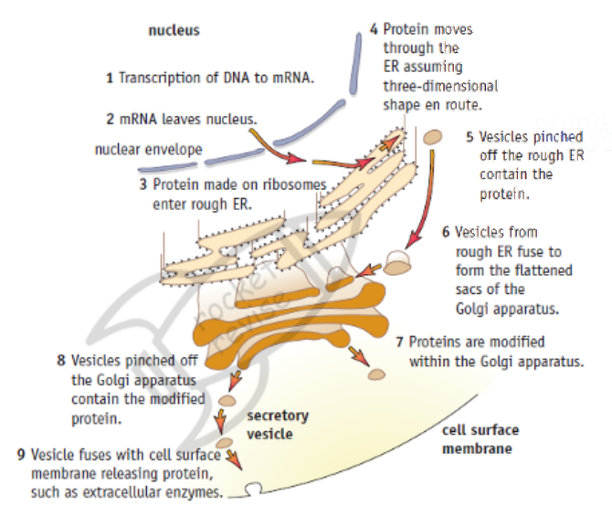
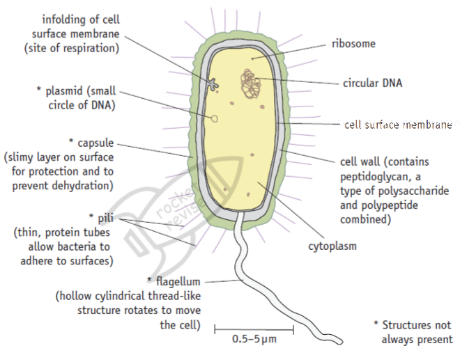
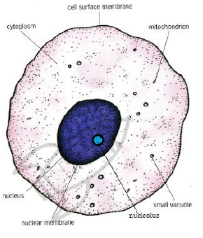

Cell structure
Every organism is built from cells, and inside each cell different structures carry out different jobs. This page covers the ultrastructure of eukaryotic and prokaryotic cells, the route a secreted protein takes through the cell, how cells are grouped into tissues and organs, and how microscopes and simple calculations let us measure what we see.
What all cells have in common
Cell theory says that the cell is the basic unit of life and that new cells only come from existing cells. Whatever the organism, its cells share a small set of features, because these are the minimum needed to stay alive and make copies of itself:
- Cell surface membrane: a phospholipid bilayer with proteins that separates the inside of the cell from its surroundings and controls what enters and leaves.
- Cytoplasm: the watery contents of the cell where many metabolic reactions take place.
- DNA: the genetic material, which carries the instructions for making proteins.
- Ribosomes: the sites where those instructions are read and proteins are assembled.
Cells then fall into two groups. Eukaryotic cells (animals, plants, fungi and protoctists) keep their DNA inside a nucleus and have many membrane-bound organelles. Prokaryotic cells (bacteria) have no nucleus and no membrane-bound organelles. Eukaryotic cells are typically 10 to 100 µm across, while prokaryotic cells are usually 0.5 to 5 µm long.
The ultrastructure of a eukaryotic cell
Ultrastructure means the detail of a cell that only an electron microscope can reveal. Most organelles are surrounded by membranes, which divide the cell into compartments. Compartments matter because each one can hold its own enzymes and conditions, so reactions that would interfere with each other are kept apart, and harmful enzymes, such as those in lysosomes, are kept away from the rest of the cell.

| Organelle | Structure | Function |
|---|---|---|
| Nucleus | The largest organelle. Surrounded by a nuclear envelope of two membranes, perforated by nuclear pores. Contains chromatin: linear DNA wound around histone proteins. | Stores the genetic information and controls the cell by deciding which genes are transcribed. Pores let mRNA and ribosome subunits out into the cytoplasm. |
| Nucleolus | A dense, darkly staining region inside the nucleus. It has no membrane. | Makes ribosomal RNA (rRNA) and assembles ribosome subunits. |
| Ribosomes | Tiny particles of rRNA and protein, made of a large and a small subunit. No membrane. Eukaryotic ribosomes are 80S. | Site of translation, where amino acids are joined by peptide bonds into polypeptides. Free ribosomes make proteins used inside the cell; ribosomes on the RER make proteins for export or for membranes. |
| Rough endoplasmic reticulum (RER) | A system of flattened, membrane-bound sacs (cisternae) continuous with the nuclear envelope, with ribosomes on the outer surface. | Polypeptides made by its ribosomes enter the lumen, where they fold into their 3D shape. The proteins are then sent on to the Golgi apparatus in transport vesicles. |
| Smooth endoplasmic reticulum (SER) | A network of membrane-bound tubules with no ribosomes. | Makes and processes lipids, including phospholipids and steroids. Stores calcium ions, especially in muscle cells. |
| Golgi apparatus | A stack of curved, flattened cisternae surrounded by small vesicles. Vesicles from the ER fuse with one face (the cis face) and new vesicles bud off the other (the trans face). | Modifies proteins, for example by adding carbohydrate to make glycoproteins or lipid to make lipoproteins. Sorts and packages them into secretory vesicles. Also makes lysosomes. |
| Mitochondrion | Rod-shaped, about 1 µm wide. Two membranes: the inner one is folded into cristae. The inside, the matrix, contains enzymes, small circular DNA and 70S ribosomes. | Site of the aerobic stages of respiration, producing most of the cell's ATP. Cristae give a large surface area for the proteins of oxidative phosphorylation. |
| Lysosome | A small spherical vesicle bounded by a single membrane, containing hydrolytic (digestive) enzymes. | Digests material taken into the cell, breaks down worn-out organelles (autophagy), can destroy the whole cell (autolysis), and can release enzymes outside the cell by exocytosis. |
| Centrioles | A pair of hollow cylinders lying at right angles, close to the nucleus, each made of nine bundles of microtubules. Found in animal cells, not in most plant cells. | Before division they move to opposite poles and organise the spindle fibres that pull chromosomes apart. |
| Cell surface membrane | A phospholipid bilayer with proteins, glycoproteins and cholesterol (fluid mosaic model). About 7 nm thick. | Partially permeable barrier that controls the movement of substances in and out. Carries receptors and antigens for cell signalling and recognition. |
Structure fits function. The cristae of a mitochondrion pack a huge area of membrane into a small space for ATP synthesis. The RER is studded with ribosomes because it receives proteins as they are made. A cell that secretes a lot of protein, such as a pancreas cell making digestive enzymes, has large amounts of RER and a well-developed Golgi apparatus.
Recognising organelles in electron micrographs
In the exam you may be shown a black and white electron micrograph and asked to name a structure. Look for membranes and shapes rather than colour:
- Nucleus: large, round, with a double outline broken by pores and a dark patch (the nucleolus) inside.
- Mitochondrion: oval or sausage shaped, with a smooth double outline and inner folds running across it.
- Golgi apparatus: a curved stack of parallel, flattened sacs with small round vesicles gathered at the edges.
- RER: parallel sheets of membrane lined with tiny dark dots (ribosomes). SER looks similar but has no dots and is more tubular.
- Lysosome: a small, round, dark-staining body with a single membrane.
- Centriole: seen in cross-section as a ring of nine groups of tubes, or along its length as a short striped cylinder.
Students often confuse the Golgi apparatus with a mitochondrion. A mitochondrion has two membranes, cristae, its own ribosomes and circular DNA, and is a single closed body. The Golgi apparatus is a stack of separate sacs, each with one membrane, and is surrounded by vesicles.
How proteins are made and secreted
Many cells release proteins to work outside them. Examples are digestive enzymes (extracellular enzymes) from the pancreas, antibodies from plasma cells and peptide hormones such as insulin. These proteins pass through a fixed route of organelles. Each organelle adds something, and the protein is kept inside membranes the whole time so that it never mixes with the cytoplasm.

In the nucleus, the gene for the protein is transcribed into mRNA, which leaves through a nuclear pore.
The mRNA attaches to a ribosome on the rough ER. As the polypeptide is made, it is fed into the lumen of the RER.
Making it straight into the RER keeps the protein separate from the cytoplasm, so it can be packaged for export.
Inside the RER the polypeptide folds into its secondary and tertiary structure, and it moves through the ER sacs.
Small transport vesicles pinch off the RER, carrying the protein. They move to the Golgi apparatus and fuse with its cis face.
In the Golgi apparatus the protein is modified, for example by adding carbohydrate to form a glycoprotein, and then sorted.
Secretory vesicles bud from the trans face of the Golgi and move along the cytoskeleton to the cell surface membrane.
The vesicle membrane fuses with the cell surface membrane and the protein is released outside the cell. This is exocytosis.
Exocytosis needs ATP, which is why secretory cells contain many mitochondria.
For full marks, name the organelles in order (ribosome on RER, RER, vesicle, Golgi apparatus, vesicle, cell surface membrane) and say what happens at each: synthesis, folding, transport, modification, packaging, exocytosis.
The ultrastructure of a prokaryotic cell
Bacteria are prokaryotes. They are far smaller than eukaryotic cells and lack a nucleus and membrane-bound organelles, but they carry out the same basic processes. Some of their structures are always present; others, marked with an asterisk in the diagram, are found only in some species.

- Circular DNA: one large loop of DNA lying free in the cytoplasm in a region called the nucleoid. It is not wrapped around histones and is not enclosed by a membrane. It carries the genes the cell needs to survive.
- Plasmids: small extra rings of DNA that replicate on their own. They carry a few genes that can be useful, such as antibiotic resistance, and can be passed between bacteria.
- Ribosomes: smaller than eukaryotic ones (70S rather than 80S). They make proteins. Because they differ from our ribosomes, some antibiotics can target them without harming human cells.
- Cell wall: a rigid layer made of peptidoglycan (murein), a polymer of sugars cross-linked by short peptide chains. It keeps the cell's shape and stops it bursting when water enters by osmosis.
- Capsule (slime layer): a sticky outer layer in some bacteria. It protects against drying out and helps the cell avoid being engulfed by white blood cells. It also helps bacteria stick to surfaces.
- Flagellum: a long, whip-like protein structure that rotates from its base to push the cell through liquid.
- Pili: short, thin protein tubes on the surface. They attach the bacterium to surfaces or host cells, and special pili join two bacteria so that plasmids can be transferred.
- Mesosomes: infoldings of the cell surface membrane seen in electron micrographs of some bacteria. In exam answers they are described as increasing the membrane area for the enzymes of respiration. Many biologists now think they form when cells are prepared for electron microscopy.
| Feature | Prokaryotic cell | Eukaryotic cell |
|---|---|---|
| Typical size | 0.5–5 µm | 10–100 µm |
| Nucleus | Absent; DNA in a nucleoid region | Present, with a double membrane |
| DNA | Circular, not bound to histones; plasmids often present | Linear chromosomes wound around histones |
| Ribosomes | 70S (smaller) | 80S in the cytoplasm (70S inside mitochondria and chloroplasts) |
| Membrane-bound organelles | None | Mitochondria, ER, Golgi, lysosomes and others |
| Cell wall | Peptidoglycan (murein) | Cellulose in plants, chitin in fungi, none in animals |
Tissues, organs and organ systems
In a multicellular organism, cells do not all do the same job. They specialise, and similar cells work together. This division of labour means each job is done efficiently, but it also means the cells depend on each other.
- Tissue: a group of similar cells, with a common origin, working together to perform a particular function. Examples: squamous epithelium lining the alveoli, cardiac muscle, xylem in a plant.
- Organ: a structure made of several different tissues working together to carry out one or more functions. Examples: the heart, the kidney, a leaf.
- Organ system: a group of organs working together to carry out a major function of the body. Examples: the circulatory system (heart and blood vessels), the digestive system.
The heart shows the idea well. It contains cardiac muscle tissue to contract, connective tissue to hold it together, nervous tissue to coordinate the beat, and epithelium lining the chambers. Together these tissues make one organ that pumps blood, and the heart with the blood vessels forms the circulatory system.
If asked how a tissue differs from an organ: a tissue is made of one main type of cell doing one job, while an organ contains several tissue types and may carry out several functions. They are alike in that both consist of cells working together.
Microscopy
Two quantities describe what a microscope can do, and they are not the same thing.
- Magnification: how many times larger the image is than the real object.
- Resolution: the smallest distance between two points that can still be seen as two separate points. It decides how much detail can be seen.
Resolution is limited by the wavelength of the radiation used. Visible light has a wavelength of roughly 400 to 700 nm, so a light microscope cannot separate points closer than about 200 nm. Magnifying beyond about ×1500 only makes a blurred image bigger. Electrons have a much shorter wavelength, so electron microscopes resolve structures below 1 nm apart and can usefully magnify hundreds of thousands of times. That is why membranes, ribosomes and the inside of organelles are only visible with an electron microscope.
| Feature | Light microscope | Transmission EM (TEM) | Scanning EM (SEM) |
|---|---|---|---|
| What forms the image | Light passing through the specimen | Electrons passing through a very thin section | Electrons bounced off the surface |
| Resolution | About 200 nm | Below 1 nm (best of the three) | A few nm |
| Useful magnification | Up to about ×1500 | Over ×500 000 | Up to about ×100 000 or more |
| Image | Colour (stained), 2D | Black and white, 2D section showing internal detail | Black and white, 3D view of the surface |
| Specimen | Can be living | Dead: fixed, stained with heavy metals, in a vacuum | Dead: coated in metal, in a vacuum |

A higher magnification does not show more detail if the resolution stays the same. Ribosomes (about 20 to 30 nm across) are invisible in a light microscope however much the image is enlarged, because they are smaller than its resolution limit.
Units and the magnification equation
Cells are measured in micrometres (µm) and organelles in nanometres (nm). 1 mm = 1000 µm and 1 µm = 1000 nm, so 1 mm = 1 000 000 nm. The equation linking image size, actual size and magnification is:
magnification = image size ÷ actual size
It rearranges to give actual size = image size ÷ magnification, or image size = actual size × magnification. Both lengths must be in the same unit before you divide.
A mitochondrion measures 36 mm long on an electron micrograph with a magnification of ×12 000. Find its real length in µm.
Convert the image length to µm: 36 mm × 1000 = 36 000 µm.
Converting first avoids answers that are out by a factor of 1000.
Actual size = image size ÷ magnification = 36 000 ÷ 12 000 = 3 µm.
Check: 3 µm is a sensible length for a mitochondrion (usually 1 to 10 µm).
A scale bar labelled 5 µm is 25 mm long on the printed image.
Convert the bar length: 25 mm = 25 000 µm.
Magnification = 25 000 ÷ 5 = ×5000.
A scale bar is just an object of known size, so the same equation applies.
Measuring with an eyepiece graticule
An eyepiece graticule is a small scale inside the eyepiece. Its divisions have no fixed size, because the image of the specimen gets larger with each objective lens while the graticule stays the same. It is calibrated against a stage micrometer, a slide engraved with a scale of known length (often 1 mm divided into 100 divisions of 10 µm).
Line up the eyepiece graticule with the stage micrometer at the objective you will use.
Find a point where the scales match: for example, 40 eyepiece divisions cover 10 stage divisions, which is 10 × 10 µm = 100 µm.
One eyepiece division = 100 µm ÷ 40 = 2.5 µm at this magnification.
Remove the micrometer, put the specimen on the stage and measure it. A cell 24 divisions long is 24 × 2.5 = 60 µm long.
If you change objective, the calibration must be repeated, because each division now covers a different real length.
Quick checks
Which organelle adds carbohydrate to proteins to form glycoproteins before they are secreted?
The Golgi apparatus modifies proteins, including adding carbohydrate, and packages them into secretory vesicles. The RER is the commonest wrong answer: it receives and folds the polypeptide, but the main modification and packaging happen in the Golgi.
Which structure is found in a prokaryotic cell but never in a eukaryotic animal cell?
Animal cells have no cell wall, and only bacteria have walls made of peptidoglycan. Ribosomes are present in both cell types; they differ in size (70S and 80S) but are not absent from eukaryotes.
Why can an electron microscope show ribosomes when a light microscope cannot?
Detail depends on resolution, which depends on wavelength. The shorter wavelength of electrons lets points less than 1 nm apart be distinguished. Extra magnification without better resolution only enlarges a blurred image, which is why the second option is wrong.
A cell is 40 µm in diameter. In a drawing it is 80 mm across. What is the magnification of the drawing?
80 mm = 80 000 µm, and 80 000 ÷ 40 = 2000. Forgetting to convert millimetres to micrometres gives ×2, the commonest error.
Forty eyepiece divisions line up with 0.2 mm on a stage micrometer. How long is a cell that spans 15 eyepiece divisions?
0.2 mm = 200 µm, so one eyepiece division = 200 ÷ 40 = 5 µm. The cell is 15 × 5 = 75 µm. The answer 5 µm is the value of a single division, not the length of the cell.
Which statement correctly distinguishes an organ from a tissue?
A tissue is a group of similar cells doing a particular job, while an organ is built from several tissues. The first option reverses the two definitions, and plants have tissues too, such as xylem and phloem.